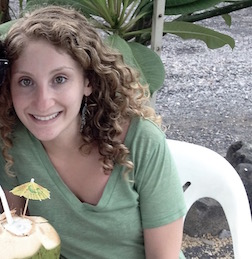

I am a software developer with a passion for social justice. My experience is focused in functional programming and responsive design. I firmly believe that innovation is driven by diversity and I am interested in working with a team to utilize technology towards positive social change.
The web is a powerful tool. Let's use it to change the world!

I am a software developer with a background in education, poverty alleviation, and female empowerment. Ever since childhood, I have loved to solve puzzles and build things from scratch. After studying music and social sciences in college, I realized my passion to work in a field that combines logical thinking, creativity, and social change. I am currently attending an immersive full-stack JavaScript program through Code Fellows where I am learning new frameworks and developing both individual and group projects. Code Fellows is a world-class software development school located in Seattle, WA.